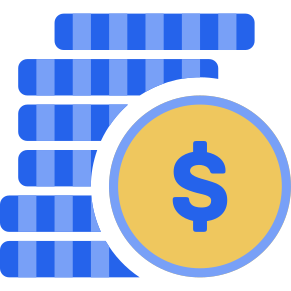

How to Save Money on a Low Income
Saving can feel impossible when most of your income goes toward essential expenses. But understanding where your money goes may reveal opportunities you have not noticed before. And when life happens, your savings are there to help you.


Your budget needs to reflect your real life.
Advice such as saving 20% of your income can be useful for some people, but it is not realistic for everyone. If your income is limited and your essential expenses are high, following a fixed percentage may leave you short of money for things you genuinely need.
Before assuming that saving is impossible, it can help to understand how much money comes in, which expenses must be paid, and where the rest goes. You may discover that some spending can be reduced, even if only by a small amount.
Of course, not everyone has unnecessary spending to cut. If your income barely covers your essential expenses, your options may be limited. The goal is not to blame yourself for your financial situation, but to understand it and find what is realistically possible.
Do not force a savings deposit if it means you cannot afford food, housing, utilities, necessary transport, or other essential obligations.
Sometimes, the first step is finding out where your money goes.
I have a friend who wanted to save money for years but struggled to put anything aside. She believed her income was too low to make saving possible.
One day, she decided to take a closer look at her bank statements. What she discovered surprised her: a noticeable part of her income was going toward small purchases she did not really need, such as snacks and soft drinks.
Each purchase seemed insignificant on its own. But when she looked at her spending as a whole, she realized how much those little expenses were adding up to.
After recognizing this pattern, she began cutting back on purchases she did not genuinely need. She did not suddenly earn more money. Instead, she changed how she used the money she already had. As a result, she was finally able to save a meaningful amount every month — something she had previously thought was impossible.
Her experience illustrates an important lesson: before deciding that you cannot save, take some time to understand where your money is going. You might find opportunities you had not noticed before.
This will not work the same way for everyone. If you already spend almost everything on essentials, there may be very little you can cut. But reviewing your spending is a useful place to start because it helps you make decisions based on your actual situation rather than guesswork.

Find out where your money goes.
One of the simplest ways to understand your spending is to review your recent bank statements. Look at the past month or two and check what you actually spent, rather than relying only on your memory.
Pay attention to recurring payments and small purchases. You might notice frequent snack purchases, soft drinks, takeaway food, subscriptions you rarely use, or other expenses that have become habits.
The important thing is to look at the total, not just the price of each individual purchase.
For example, imagine spending €2 on snacks and soft drinks on five days each week. That would add up to approximately €40 over a four-week month. If you decided to reduce some of those purchases, you could potentially redirect part of that money toward a savings goal.
This is only an illustration. You do not need to stop buying every snack or drink to save money. The point is to identify purchases that you personally consider less valuable than the things you would rather save for.
Once you have reviewed your transactions, separate your spending into three useful groups:
Housing, food, bills and necessary transport.
Things you enjoy and genuinely value.
Purchases you could reduce without much impact.
You do not have to eliminate every small pleasure. Instead, look for spending you can reduce without making your life unnecessarily difficult.
Once you identify those expenses, decide how much of the money you free up you can realistically put toward your savings. That turns awareness into a practical plan.
What might a budget look like?
Imagine someone receives €1,000 per month after deductions. The example below shows one possible budget. These amounts are illustrative only; actual costs vary depending on a person's circumstances and location.
€400
€250
€100
€200
In this example, €50 remains after the listed expenses. That does not automatically mean the entire €50 should be saved. The person may still need to account for irregular costs, unexpected bills, or expenses missing from the list.
If reviewing the bank statements also reveals €15 in low-priority purchases that the person genuinely wants to reduce, that could create a little more room in the budget. The person could then decide whether to save some or all of that amount, depending on their needs.
The point is not that everyone can find €15 to cut. It is that understanding your actual spending can help you identify options that a rough estimate might miss.
Unexpected costs can change the result. Review your budget regularly and adjust your savings amount when your circumstances change.
Start with a realistic target.
If your budget allows it, choose an amount that you can reasonably set aside without relying on money needed for essentials. You might start with €5, €10, or €20. The right amount is the one that fits your actual circumstances.
For example, saving €10 every month would add up to €120 over twelve months, assuming you make all twelve deposits and do not withdraw any of that money. It is a simple illustration of how regular contributions add up, not a promise that everyone can afford to save €10 each month.
If your income changes from month to month, you do not have to save the same amount every time. You might contribute more in a better month and less in a difficult one.
You can also set a goal for a specific purpose, such as a future purchase, a planned trip, or an emergency buffer. Having a clear purpose can help you decide what you are saving for and why.
If you need help choosing a target, read our guide How to Set a Savings Goal.
Review expenses without making life harder.
Small changes can help, but only when they are practical and do not harm your well-being. Start with costs you can actually influence instead of assuming every expense can be reduced.
Cancel services you no longer use.
Compare prices and make a list before buying.
Check whether a suitable cheaper plan exists.
Plan meals around what you will use.
Avoid assuming that every person can cut the same costs. Someone already paying the lowest practical rent and buying only essentials may have very little room to reduce spending. In that situation, the main challenge may be insufficient income rather than poor budgeting.
If your essential expenses are consistently higher than your income, a budget alone cannot solve the difference. Depending on your circumstances, it may help to check whether you qualify for local assistance, benefits, or other support.

Do not forget expenses that arrive occasionally.
Some expenses are predictable even if they do not appear every month. Examples include annual subscriptions, seasonal clothing, school supplies, and planned travel.
If you know that an expense is coming, estimate its cost and divide it across the months remaining before it is due. For example, if a €120 bill is due in six months and you have not saved anything for it yet, setting aside €20 per month would cover the amount by the due date, provided you can afford those contributions.
This is different from an emergency fund, which is intended for important unexpected costs. You can learn more in our guide to building an emergency fund.
Another useful method is to create separate savings pots for known future costs. Our guide What Are Sinking Funds? explains how that works.
It is okay to use your savings when you need them.
Saving money is not only about reaching a target or watching a balance grow. It is also about having money available when something important happens.
When your income is limited, an unexpected expense can be especially difficult to manage. A necessary repair, an urgent bill, or another essential cost may arrive when you have little money available.
If you have managed to build up some savings, you have another option: you can use part of that money to cover the expense.
Your savings are there to help you manage important expenses, not simply to remain untouched forever.
Imagine you have saved €300 over several months and then need €120 for an essential repair. After paying for it, you have €180 remaining. Your savings helped you cover a real expense, and you still have some money available for whatever comes next.
You may feel disappointed when your balance decreases, especially if it took a long time to build up. But using money for a genuine need does not erase the effort you made to save it.
When your circumstances allow it, you can begin building your savings again. You do not have to replace the money immediately or maintain the same monthly contribution during a difficult period.
Of course, if your essential expenses consistently exceed your income, rebuilding savings may take time. That does not make your efforts pointless. Even a modest amount can provide some flexibility when an important cost arises.
The aim is not to protect your savings balance at all costs. It is to build a financial buffer when you can, use it when you genuinely need it, and replenish it when your circumstances permit.

Common mistakes when money is tight.
Setting a target that is too high. An unrealistic target can make your budget harder to manage. Start with an amount that your numbers support.
Ignoring small purchases. A low-cost purchase may not seem important on its own, but repeated spending can add up. Review your actual transactions before deciding whether there are habits you would like to change.
Assuming every expense can be cut. If most of your income already goes toward essentials, you may have very little room to reduce spending. Do not blame yourself for costs you cannot reasonably avoid.
Ignoring irregular expenses. A budget that only includes monthly bills may look better than reality. Include costs that happen a few times a year.
Using credit to maintain a savings habit. Borrowing money to make a savings deposit can leave you with debt costs without improving your overall financial position. Do not treat a deposit as progress if it requires borrowing to cover essentials.
Feeling that a withdrawal means failure. Savings are a resource you can use when an important need arises. If you have to withdraw money, update your plan and rebuild your balance when you can.
Giving up after a difficult month. If you need to pause contributions, review your situation and restart when it becomes manageable. A missed deposit does not erase what you have already set aside.
A simple plan to begin this month.
Write down your take-home income.
Review your bank statements and regular expenses.
Identify purchases you could comfortably reduce.
Choose a realistic savings target.
Plan for upcoming bills and important expenses.
Adjust your plan when your circumstances change.
Review the plan after a month. If your estimate was too optimistic, change it. If you discover that you can comfortably save more than expected, you can increase your contribution.
If you need to use some of your savings, update your balance and continue when you can. Your plan should support your life, not make it harder.
What matters most when saving on a low income.
Build your budget around your real income and expenses.
Review bank statements to understand where your money goes.
Reduce low-priority spending where you realistically can.
Protect essential spending before deciding how much to save.
Plan for predictable costs that do not happen every month.
Use savings for important needs without treating it as failure.
Rebuild your savings when your circumstances allow it.
Give your savings a clear purpose.
Create a savings goal, choose a target that fits your circumstances, and track your progress over time with RealSavings Tracker.
Start Saving for Free